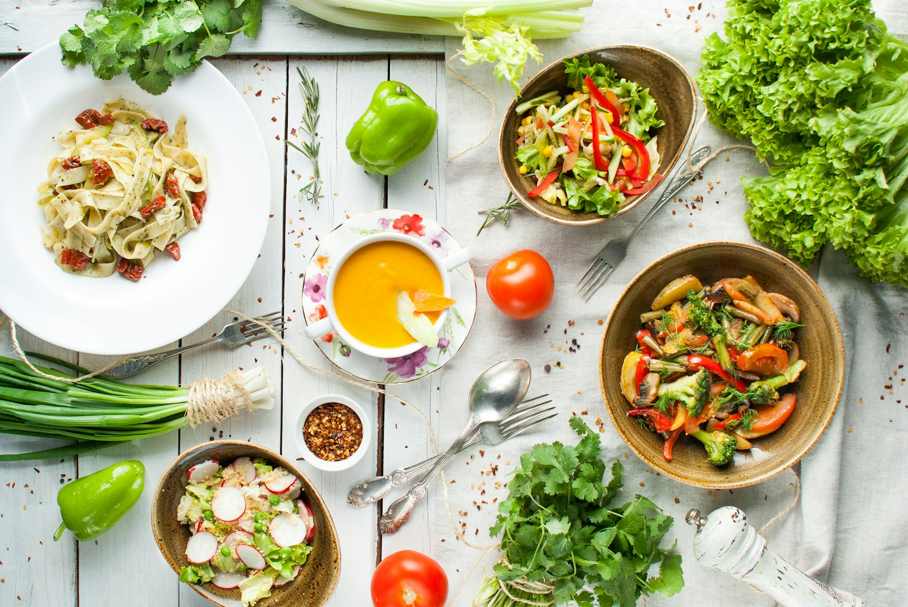

Ό,τι περιμένεις από έναν πάγκο κρεοπωλείου — κοπές, αλλαντικά, «κιμά» — φτιαγμένο από φυτά. Η τελετουργία μένει. Το ζώο λείπει.

Στεκόμαστε πίσω από ξύλινο πάγκο, με ζυγαριά, λαδόκολλα και μαχαίρι. Ρωτάμε τι θα μαγειρέψεις. Προτείνουμε κοπή, πάχος, τρόπο ψησίματος. Η μόνη διαφορά: το υλικό μεγάλωσε σε χωράφι, όχι σε στάβλο.
«Δεν πουλάμε απομίμηση κρέατος. Πουλάμε φυτά που σέβονται το μαχαίρι.»
Έξι κατηγορίες στον πάγκο, όλες χειροποίητες. Κόβονται μπροστά σου, ζυγίζονται, τυλίγονται.
Σιτάρι υδρολυμένο, ψημένο σε ζωμό με θυμάρι και μαύρο πιπέρι. Κόβεται σε φέτες, τρίβεται, ψήνεται.
Σόγια ζυμωμένη 48 ώρες. Ξηρό, γήινο, με υφή που κρατάει στο τηγάνι.
Μεταξένιο για σούπες, σφιχτό για ψήσιμο, καπνιστό για σάντουιτς. Φτιαγμένο ημερησίως.
Πάστα ελιάς, «σαλάμι» από seitan με πάπρικα, καπνιστό «bacon» από καρύδι και λάδι.
Κάσιου από κάσιους, παρμεζάνα από αμύγδαλο, κρέμα από tofu. Χωρίς καζεΐνη.
Πες μας τι θέλεις να μαγειρέψεις — σου προτείνουμε το κομμάτι, το κόβουμε στο πάχος που θες.
Ζυγίζουμε, κόβουμε, τυλίγουμε σε λαδόκολλα. Η τελετουργία του κρεοπωλείου μένει — το υλικό είναι το μόνο που διαφέρει.
Ούτε κρέας, ούτε γαλακτοκομικά, ούτε αυγά, ούτε μέλι. Κάθε συστατικό ελέγχεται — και το λέμε ανοιχτά στον πάγκο.
Το seitan και το tempeh φτιάχνονται στο εργαστήρι πίσω από τον πάγκο κάθε βδομάδα. Δεν τα φέρνουμε έτοιμα.
Ο πάγκος, τα υλικά, το εργαστήρι.
«Ήρθα για το seitan. Έμεινα για την κουβέντα πάνω από τον πάγκο.»Πελάτης του πάγκου
Γιατί κάνουμε τη δουλειά ενός κρεοπωλείου: κόβουμε, ζυγίζουμε, προτείνουμε κοπές. Απλώς το υλικό είναι φυτικό. Ο πάγκος, η λαδόκολλα και ο διάλογος μένουν ίδια.
Κάποια προϊόντα ναι. Κάθε ετικέτα στον πάγκo γράφει καθαρά «σόγια», «γλουτένη» ή «ελεύθερο». Το tempeh έχει σόγια, το seitan έχει γλουτένη, τα τυριά από κάσιους δεν έχουν κανένα από τα δύο.
Τα χειροποίητα — seitan, tempeh, τυριά — θέλουν 1 έως 2 εργάσιμες. Τα έτοιμα (tofu, αλλαντικά, μπιφτέκια) είναι διαθέσιμα αυθημερόν.
Ναι, με χονδρική τιμολόγηση κατόπιν συνεννόησης. Το ελάχιστο είναι 5 κιλά ανά παραγγελία, με παράδοση σε Γαλάτσι, Κυψέλη και Πατήσια.
Δεν προσπαθούμε να μιμηθούμε κρέας. Το seitan με θυμάρι έχει γεύση θυμάρι. Το tempeh έχει γεύση ζύμωσης. Είναι δικά τους πράγματα — όχι απομιμήσεις.
Ναι, και είναι το αγαπημένο μας κομμάτι. Φέρε τη συνταγή, σου λέμε ποια κοπή θέλει και σε τι πάχος, και την κόβουμε επιτόπου.
Στείλε τη συνταγή ή απλώς τι έχεις στο μυαλό σου. Θα σου πούμε ποια κοπή θέλει και σε τι πάχος — και θα την κόψουμε.
Γράψε μας